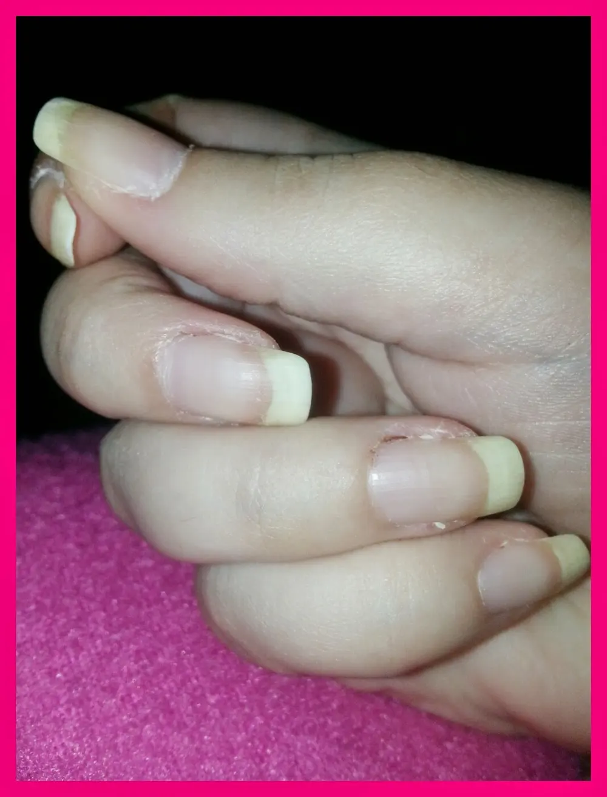

unghie al natural
Salve ragazzi e ragazze.
Innanzitutto buona domenica e buon primo marzo. Finalmente si staAvvicinando la primavera e questo cosa vuol dire????
una sola cosa.. ovvero: SOLEEEEEE :D
Non vedo l'ora.
Mi ispira tanta allegria e voglia di vivere. Non che non ce l'abbia già ahahahah ma l'estate è gioia. Quindi in attesa di questa primavera floreale e piena di sole io continuo con le mie nail art. Che tra l'altro, in estate preferisco mettere smaltini tutti colorati, con colori vivi e accesi. Dunque ere vieni presto estateeeee.
Intanto oggi, in pieno relax ho fatto la manicure.. ovvero, un inizio di manicure, perché poi quando farò la Nail Art rifarò DI sicuro un'altra sbirciatina tra limare e tagliare pellicine che, puntualmente sono lì a tirarmi.. Ho Un brutto vizio haimè.. Non mi mangio le unghie come mi tiro le pellicine.. A volte vado proprio alla ricerca e se non ci sono? me le creo facendo invasione di sangue ahahahah.. Oddio no, scherzo.. ma mi insanguino tutto il dito e bruciaaaa..mamma quanto brucia..
Tornando al relax.. ho fatto un inizio di manicure e non mi va per ora di pasticciare, di conseguenza oggi le lascio al naturale.. ovvero così..

Ecco appunto, si vede dalla foto una pellicina sull'anulare..ma sapete perché è ancora lì? perché brucia ahahahah domani la taglierò..
Questo è un modo anche per farvi vedere le mie unghiette al natural..e che non faccio ricostruzioni ma che sono solo smalti quelli che uso..
Vabbè si nota anche dai miei lavoretti caserecci ihihih ma tutto ciò che faccio è solo passione e fantasia personale..
Comunque, a volte mi piace anche lasciarle così, a parte che l'unghia respira ma poi sono ancheleganti..o sbaglio? nel senso che, magari con un filo di smalto trasparente sono anche carine.. Poi però non duro più di 3 giorni e vedo subito come e cosa fare ahahahah
Beh ora vado a prendere un buon caffè che sento un odorino.. Vi rinnovo una buona domenica.. un bacione